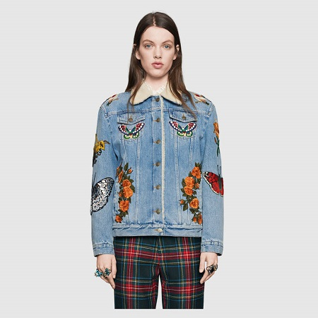
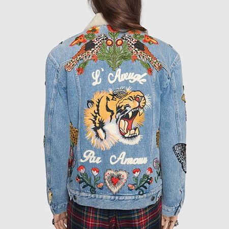

«Luxury must be comfortable, otherwise it is not luxury.» Coco Chanel


New
Embroidered denim jacket
Характеристики товара
Джинсовая куртка Alessandro Michele, сшитая вручную в поездке в Лос-Анджелес. Эта куртка выровненa с вырезом и украшенa сочетанием вышивок, представляющих некоторые из наиболее узнаваемых мотивов коллекции, включая птиц, бабочек, пчел и тигра, обрамленный фразой «L'Aveugle Par Amour», которая переводится как «Blind For Love». Индивидуально вышитые аппликации созданы вручную. Этот процесс занимает около 4-х часов для каждой детали.